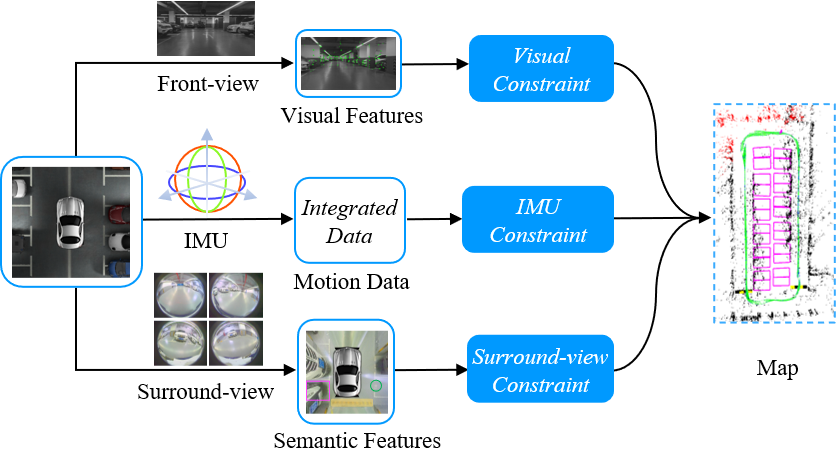
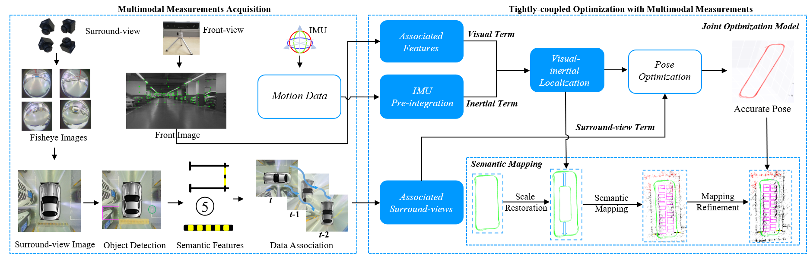
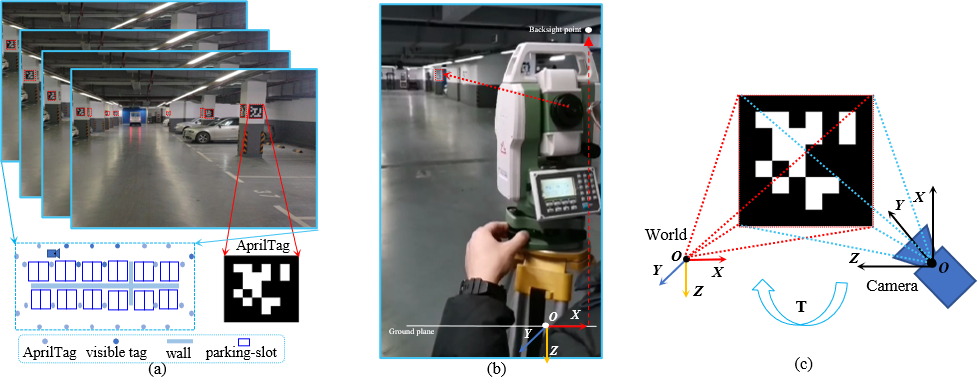

|
MOFISSLAM: A Multi-Object Semantic SLAM System with Front-view, Inertial and Surround-view Sensors for Indoor Parking Xuan Shao1, Lin Zhang1,Tianjun Zhang1, Ying Shen1 and Yicong Zhou2 1 School of Software Engineering, Tongji University, Shanghai, China 2 Department of Computer and Information Science, University of Macau, Macau, China |
Introduction
The semantic SLAM (simultaneous localization and mapping) system is a crucial module for autonomous indoor parking. Visual cameras (monocular/binocular) and IMU (inertial measurement unit) constitute the basic configuration to build such a system. The performance of existing SLAM systems typically deteriorates in the presence of dynamically movable objects or objects with little texture. By contrast, semantic objects on the ground embody the most salient and stable features in the indoor parking environment. Due to their inabilities to perceive such features on the ground, existing SLAM systems are prone to tracking inconsistency during navigation. In this paper, we present MOFISSLAM, a novel tightly-coupled Multi-Object semantic SLAM system integrating Front-view, Inertial, and Surround-view sensors for autonomous indoor parking. The proposed system moves beyond existing semantic SLAM systems by complementing the sensor configuration with a surround-view system capturing images from a top-down viewpoint. In MOFISSLAM, apart from low-level visual features and inertial motion data, typical semantic features (parking-slots, parking-slot IDs and speed bumps) detected in surround-view images are also incorporated in optimization, forming robust surround-view constraints. Specifically, each surround-view feature imposes a surround-view constraint that can be split into a contact term and a registration term. The former pre-defines the position of each individual surround-view feature subject to whether it has semantic contact with other surround-view features. Three contact modes, defined as complementary, adjacent and coincident, are identified to guarantee a unified form of all contact terms. The latter further constrains by registering each surround-view observation and its position in the world coordinate system. In parallel, to objectively evaluate SLAM studies for autonomous indoor parking, a large-scale dataset with groundtruth trajectory is collected, which is the first of its kind. Its groundtruth trajectory, commonly unavailable, is obtained by tracking artificial features scattered in the indoor parking environment, whose 3D coordinates are measured with an ETS (electronic total station).
Overall Framwork
The overall framework of MOFISSLAM is shown in the following figure. Sensor configuration of VISSLAM consists of a front-view camera, an IMU and four fisheye cameras facing ground to form a surround-view camera system. Visual features from the front-view camera, preintegrated IMU measurements between two consecutive keyframes and parking-slots from the surround-view camera system constitute the multi-modal sensor data for VISSLAM. There are two major components in MOFISSLAM, sensor calibration and joint optimization. Sensor calibration is responsible for multi-modal sensor data fusion. The joint optimization model plays a critical role in tightly fusing multi-modal sensor measurements, which is the core of MOFISSLAM.

We provided an effective yet cost-efficient groundtruth trajectory acquisition approach simply with a mild intervention of the environment. In our approach, the groundtruth trajectory was obtained with an ETS, which can maintain the trajectory integrity and be affordable to the general public. As can be seen from the following figure, three steps were involved, landmarks deployment, artificial landmarks measurement and reference trajectory acquisition. Landmarks deployment ensures a tailored indoor parking environment with artificial landmarks that can be easily detected. Accurate coordinates of artificial landmarks are measured with the benefit of an ETS. By aligning artificial landmark with known 3D coordinates and their 2D projections into the front camera with known pixel coordinates, the camera pose can be acquired.

Benchmark Dataset
(pw: in1j)
Totally, the dataset contains 12,407 front-view images, 12,407 IMU motion data segments with each segment recording the vehicle motion between two consecutive front-view frames, and 4,033 surround-view images (synthesized from 16,132 fisheye images). The resolutions of the fisheye camera and the front-view camera are 1280×1080 and 1280×720, respectively. The spatial resolution of each surround-view image is 416$\times$416, corresponding to a 10m×10m flat physical region, i.e., the length of 1 pixel in the surround-view image corresponds to 2.40cm on the physical ground. Moreover, its groundtruth trajectory was also acquired by tracking artificial features evenly scattered in the indoor parking environment.
The MOFISSLAM is only for acamedic use under the GNU General Public License Version 3 (GPLv3). For commercial purposes, please contact the authors for details.2. read_data.cc
For text data, we use boost for serilization. The above file contains the snippet for how to read imu data.
Demo Video
The following is the demo video demonstrating the capability of our MOFISSLAM system.
Last update: July. 8,2021